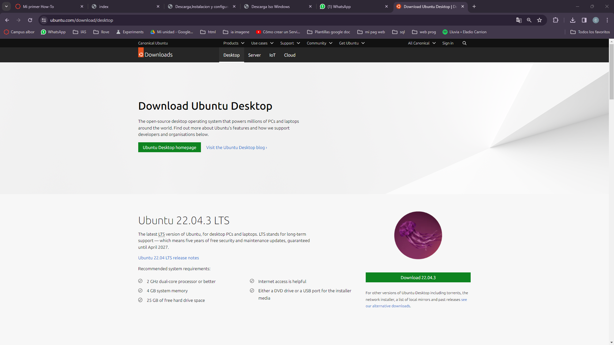
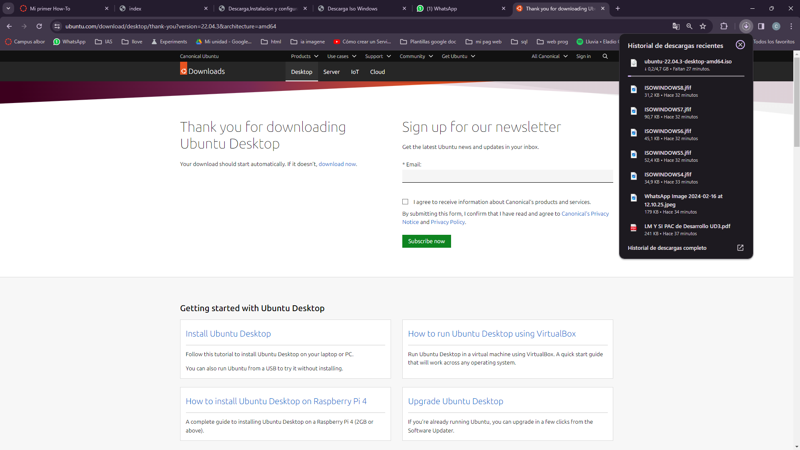

HOW TO ISO UBUNTU
Para descargar la ISO de Ubuntu lo primero es ir al siguiente enlace de la pagina oficial de UBUNTU:
Una vez en esta pagina le das a Download en la version que quiras Descargar en este caso la ultima que es la 22.04.3 .
Luego de esto se empezara a descargar en "Descargas" la ISO de UBUNTU
